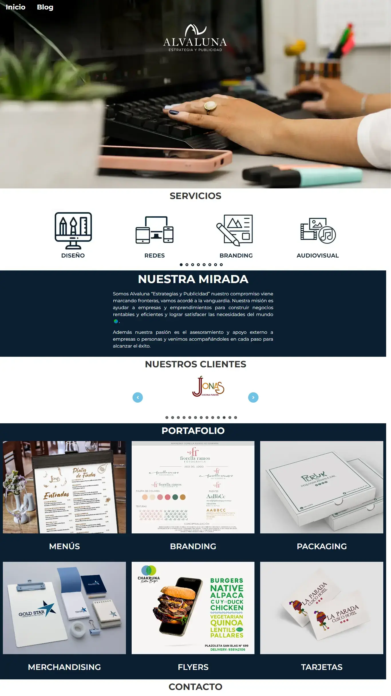

SITIO WEB DE ALVALUNA
Creación de sitio web
Sobre el proyecto
AlvaLuna es una agencia de estrategia, marketing, branding y publicidad. Tenía 2 años en el mercado y para tener mayor presencia en internet decidieron tener un sitio web. Entonces creamos el sitio web:
- Yo hice la parte operativa: Comprar y configurar el hosting y el dominio. Desarrollo del sitio web en WordPress.
- Ellos hicieron el concepto y el diseño: El diseño del sitio web, las fotografías y los textos.
Se hicieron algunos cambios en el proceso y se espera más cambios para que tenga una mejora constante.
Herramientas utilizadas
WordPress
Empezamos utilizando WordPress porque es un CMS (Sistema de gestión de contenidos) flexible para crear y para gestionar el contenido. Es decir podemos empezar de manera sencilla y gratuita, pero de después con los cambios se puede ir haciendo un poco más complejo.
Elementor
Era el builder o constructor y estilos de la parte visual más popular y como tenía su versión gratuita, empezamos por ahí. Aunque necesitamos otros plugins complementos de Elementor para ciertas partes, como el carrusel.
Rank Math SEO
Para el posicionamiento de la web primero usamos un plugin llamado "All in One SEO", que venía por defecto con el hosting. Pero luego los cambiamos a Rank Math porque era más completo. Aunque se usó lo básico, ya que no tenía mucho texto.
Google Analytics
Implementamos un control mínimo para las estadísticas del sitio web, y esta herramienta te da lo necesario.
Hotjar
Para aumentar el control de las estadísticas de la web, se tomo en cuenta la interacción del cliente.